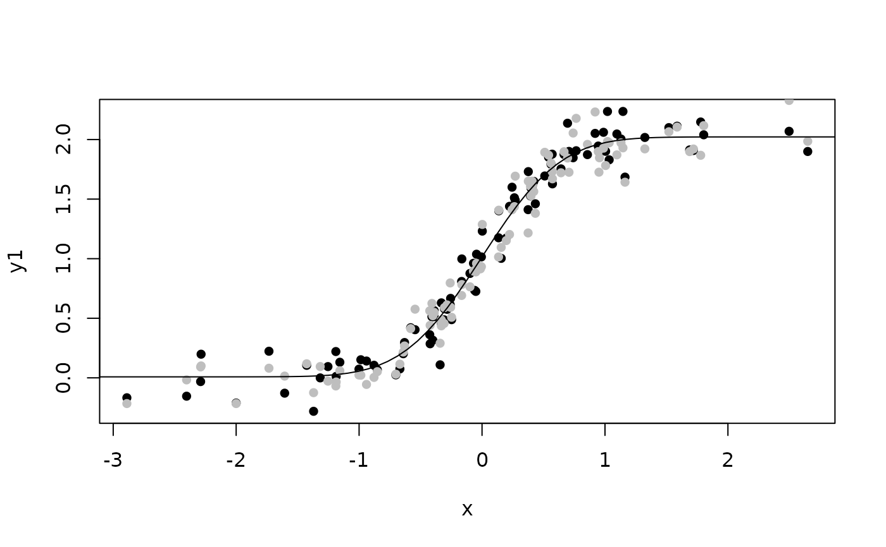

Add non-linear constraints to latent variable model
# S3 method for default constrain(x,par,args,...) <- value # S3 method for multigroup constrain(x,par,k=1,...) <- value constraints(object,data=model.frame(object),vcov=object$vcov,level=0.95, p=pars.default(object),k,idx,...)
| x |
|
|---|---|
| ... | Additional arguments to be passed to the low level functions |
| value | Real function taking args as a vector argument |
| par | Name of new parameter. Alternatively a formula with lhs
specifying the new parameter and the rhs defining the names of the
parameters or variable names defining the new parameter (overruling the
|
| args | Vector of variables names or parameter names that are used in
defining |
| k | For multigroup models this argument specifies which group to add/extract the constraint |
| object |
|
| data | Data-row from which possible non-linear constraints should be calculated |
| vcov | Variance matrix of parameter estimates |
| level | Level of confidence limits |
| p | Parameter vector |
| idx | Index indicating which constraints to extract |
A lvm object.
Add non-linear parameter constraints as well as non-linear associations between covariates and latent or observed variables in the model (non-linear regression).
As an example we will specify the follow multiple regression model:
$$E(Y|X_1,X_2) = \alpha + \beta_1 X_1 + \beta_2 X_2$$ $$V(Y|X_1,X_2) = v$$
which is defined (with the appropiate parameter labels) as
m <- lvm(y ~ f(x,beta1) + f(x,beta2))
intercept(m) <- y ~ f(alpha)
covariance(m) <- y ~ f(v)
The somewhat strained parameter constraint $$ v = \frac{(beta1-beta2)^2}{alpha}$$
can then specified as
constrain(m,v ~ beta1 + beta2 + alpha) <- function(x)
(x[1]-x[2])^2/x[3]
A subset of the arguments args can be covariates in the model,
allowing the specification of non-linear regression models. As an example
the non-linear regression model $$ E(Y\mid X) = \nu + \Phi(\alpha +
\beta X)$$ where \(\Phi\) denotes the standard normal cumulative
distribution function, can be defined as
m <- lvm(y ~ f(x,0)) # No linear effect of x
Next we add three new parameters using the parameter assigment
function:
parameter(m) <- ~nu+alpha+beta
The intercept of \(Y\) is defined as mu
intercept(m) <- y ~ f(mu)
And finally the newly added intercept parameter mu is defined as the
appropiate non-linear function of \(\alpha\), \(\nu\) and \(\beta\):
constrain(m, mu ~ x + alpha + nu) <- function(x)
pnorm(x[1]*x[2])+x[3]
The constraints function can be used to show the estimated non-linear
parameter constraints of an estimated model object (lvmfit or
multigroupfit). Calling constrain with no additional arguments
beyound x will return a list of the functions and parameter names
defining the non-linear restrictions.
The gradient function can optionally be added as an attribute grad to
the return value of the function defined by value. In this case the
analytical derivatives will be calculated via the chain rule when evaluating
the corresponding score function of the log-likelihood. If the gradient
attribute is omitted the chain rule will be applied on a numeric
approximation of the gradient.
############################## ### Non-linear parameter constraints 1 ############################## m <- lvm(y ~ f(x1,gamma)+f(x2,beta)) covariance(m) <- y ~ f(v) d <- sim(m,100) m1 <- m; constrain(m1,beta ~ v) <- function(x) x^2 ## Define slope of x2 to be the square of the residual variance of y ## Estimate both restricted and unrestricted model e <- estimate(m,d,control=list(method="NR")) e1 <- estimate(m1,d) p1 <- coef(e1) p1 <- c(p1[1:2],p1[3]^2,p1[3]) ## Likelihood of unrestricted model evaluated in MLE of restricted model logLik(e,p1)#> 'log Lik.' -144.784 (df=4)#> 'log Lik.' -144.784 (df=3)############################## ### Non-linear regression ############################## ## Simulate data m <- lvm(c(y1,y2)~f(x,0)+f(eta,1)) latent(m) <- ~eta covariance(m,~y1+y2) <- "v" intercept(m,~y1+y2) <- "mu" covariance(m,~eta) <- "zeta" intercept(m,~eta) <- 0 set.seed(1) d <- sim(m,100,p=c(v=0.01,zeta=0.01))[,manifest(m)] d <- transform(d, y1=y1+2*pnorm(2*x), y2=y2+2*pnorm(2*x)) ## Specify model and estimate parameters constrain(m, mu ~ x + alpha + nu + gamma) <- function(x) x[4]*pnorm(x[3]+x[1]*x[2]) ## Reduce Ex.Timings e <- estimate(m,d,control=list(trace=1,constrain=TRUE))#> 0: 95.152055: -1.59936 -0.105361 0.00000 0.00000 0.00000 #> 1: 38.372166: -2.18276 0.313970 0.00000 0.00000 0.695563 #> 2: -48.631392: -5.42107 -0.457717 1.00498 0.959271 2.42405 #> 3: -105.61594: -4.91886 -0.355240 1.37309 0.129419 1.46668 #> 4: -152.46013: -4.25655 -1.25021 1.67211 -0.125548 2.24731 #> 5: -180.78971: -4.81503 -2.47787 1.62885 -0.253601 1.83976 #> 6: -211.28333: -4.80871 -2.49722 1.70839 -0.00201507 2.15835 #> 7: -221.43759: -4.99751 -2.78668 1.85800 -0.174273 2.15106 #> 8: -234.66131: -4.89742 -3.07152 1.81950 0.0648691 2.00370 #> 9: -235.81872: -4.84621 -3.39006 1.92584 -0.172016 2.00849 #> 10: -243.54468: -4.84315 -3.41209 1.93840 -0.0450508 2.11931 #> 11: -249.92697: -4.91487 -3.54656 1.94515 -0.0534668 2.04374 #> 12: -255.87469: -4.87632 -3.87588 1.88862 -0.0315589 2.09476 #> 13: -257.75907: -4.87427 -3.99772 1.89083 -0.0859962 2.04418 #> 14: -260.62800: -4.95795 -4.02217 1.97157 -0.00862228 2.02770 #> 15: -261.37045: -4.93303 -4.07132 1.96533 0.00792825 1.99765 #> 16: -262.57238: -4.90751 -4.12616 1.96599 0.0129978 2.02148 #> 17: -263.47561: -4.89103 -4.18618 1.97602 0.000430780 2.01046 #> 18: -264.87947: -4.85969 -4.31138 1.98012 0.00245567 2.02871 #> 19: -265.31714: -4.81145 -4.38796 1.88692 -0.00882272 2.02647 #> 20: -266.24030: -4.85667 -4.48846 1.95618 -0.00918059 2.01806 #> 21: -266.36927: -4.85544 -4.49011 1.95708 -0.00250636 2.02374 #> 22: -266.42691: -4.85201 -4.49493 1.95785 0.000744905 2.01777 #> 23: -266.52903: -4.83732 -4.50263 1.96388 0.00407767 2.02003 #> 24: -266.85270: -4.78249 -4.55686 1.98000 0.00102889 2.01598 #> 25: -267.11134: -4.79062 -4.63490 1.97189 0.00301232 2.01883 #> 26: -267.25830: -4.76838 -4.70957 1.98155 0.00924771 2.01328 #> 27: -267.27809: -4.74963 -4.75605 1.97690 0.00627003 2.01510 #> 28: -267.27984: -4.74889 -4.75331 1.98104 0.00877020 2.01359 #> 29: -267.28003: -4.75020 -4.75214 1.98027 0.00821343 2.01379 #> 30: -267.28003: -4.75002 -4.75222 1.98016 0.00820169 2.01385 #> 31: -267.28003: -4.75004 -4.75224 1.98020 0.00821070 2.01384 #> 32: -267.28003: -4.75004 -4.75223 1.98020 0.00821063 2.01384constraints(e,data=d)#> Estimate Std. Error Z value Pr(>|z|) 2.5% 97.5% #> mu 1.598142 0.02227334 71.75133 0 1.554487 1.641797x0 <- seq(-4,4,length.out=100) lines(x0,coef(e)["nu"] + coef(e)["gamma"]*pnorm(coef(e)["alpha"]*x0))############################## ### Multigroup model ############################## ### Define two models m1 <- lvm(y ~ f(x,beta)+f(z,beta2)) m2 <- lvm(y ~ f(x,psi) + z) ### And simulate data from them d1 <- sim(m1,500) d2 <- sim(m2,500) ### Add 'non'-linear parameter constraint constrain(m2,psi ~ beta2) <- function(x) x ## Add parameter beta2 to model 2, now beta2 exists in both models parameter(m2) <- ~ beta2 ee <- estimate(list(m1,m2),list(d1,d2),control=list(method="NR")) summary(ee)#> ||score||^2= 2.642461e-17 #> Latent variables: #> ____________________________________________________ #> Group 1 (n=500) #> Estimate Std. Error Z value Pr(>|z|) #> Regressions: #> y~x 0.93621 0.04767 19.64130 <1e-12 #> y~z 1.03489 0.03217 32.17115 <1e-12 #> Intercepts: #> y -0.05578 0.04814 -1.15869 0.2466 #> Residual Variances: #> y 1.15827 0.07326 15.81139 #> ____________________________________________________ #> Group 2 (n=500) #> Estimate Std. Error Z value Pr(>|z|) #> Regressions: #> y~z 0.96338 0.04278 22.51997 <1e-12 #> Intercepts: #> y -0.01359 0.04657 -0.29191 0.7704 #> Additional Parameters: #> beta2 1.03489 0.03217 32.17115 <1e-12 #> Residual Variances: #> y 1.07306 0.06787 15.81139 #> #> ______________________________________________________________________ #> Non-linear constraints: #> Estimate Std. Error Z value Pr(>|z|) 2.5% 97.5% #> psi 1.034886 0.03216812 32.17115 4.470275e-227 0.9718373 1.097934 #> ______________________________________________________________________ #> Estimator: gaussian #> ______________________________________________________________________ #> #> Number of observations = 1000 #> BIC = 2994.955 #> AIC = 2960.6 #> log-Likelihood of model = -1473.3 #> #> log-Likelihood of saturated model = -1473.128 #> Chi-squared statistic: q = 0.3442204 , df = 1 #> P(Q>q) = 0.5574032 #> #> RMSEA (90% CI): 0 (0;0.0698) #> P(RMSEA<0.05)=0.85508 #> #> rank(Information) = 7 (p=7) #> condition(Information) = 5.215445 #> mean(score^2) = 3.774945e-18 #> ______________________________________________________________________m3 <- lvm(y ~ f(x,beta)+f(z,beta2)) m4 <- lvm(y ~ f(x,beta2) + z) e2 <- estimate(list(m3,m4),list(d1,d2),control=list(method="NR")) e2#> ____________________________________________________ #> Group 1 (n=500) #> Estimate Std. Error Z value Pr(>|z|) #> Regressions: #> y~x 0.93621 0.04767 19.64130 <1e-12 #> y~z 1.03489 0.03217 32.17115 <1e-12 #> Intercepts: #> y -0.05578 0.04814 -1.15869 0.2466 #> Residual Variances: #> y 1.15827 0.07326 15.81139 #> ____________________________________________________ #> Group 2 (n=500) #> Estimate Std. Error Z value Pr(>|z|) #> Regressions: #> y~x 1.03489 0.03217 32.17115 <1e-12 #> y~z 0.96338 0.04278 22.51997 <1e-12 #> Intercepts: #> y -0.01359 0.04657 -0.29191 0.7704 #> Residual Variances: #> y 1.07306 0.06787 15.81139 #>